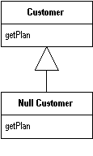
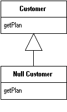

Introduce Null Object
You have repeated checks for a null value.
Replace the null value with a null object.
if (customer == null) plan = BillingPlan.basic();
else plan = customer.getPlan();
 

For more information see page
260
of Refactoring
| Refactoring Home | | Alphabetical List |